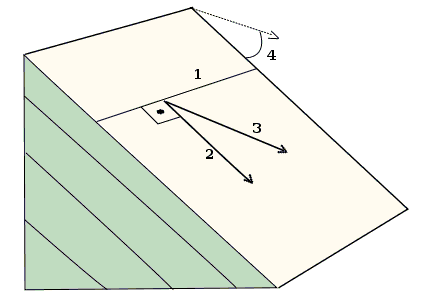

|
 |
Definitions
- Strike. the
orientation of the horizontal
line within a plane. While
there are an infinite number of
horizontal lines within a plane,
they will all be parallel and
share the same orientation.
For a horizontal plane, strike
is undefined.
- Dip direction:
The dip direction will be
orthogonal to the strike
direction. Water will flow down
the plane in this direction.
- Apparent dip: if you attempt
to measure dip and are not
orthogonal to the strike
direction, the measured value
will be smaller, and can even
appear to be horizontal
- Dip: steepest angle
from the horizontal of a plane.
A horizontal plane has a dip of
0, and a vertical plane a dip of
90. The larger the dip,
the steeper the plane.
Image courtesy Eurico Zimbres, Wikipedia.
|